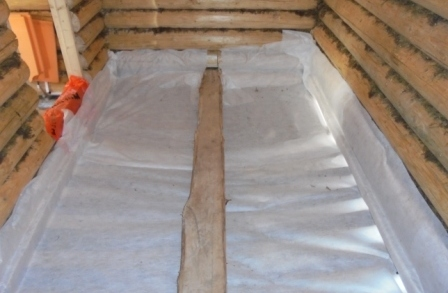
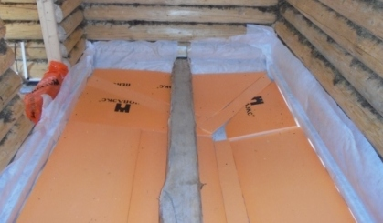
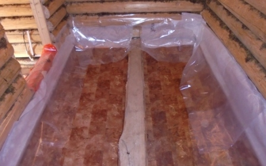
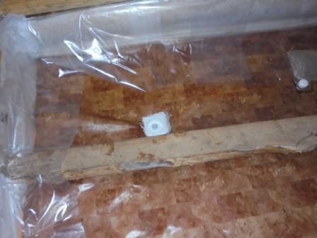

Первым слоем уложим пароизоляцию. С целью предотвратить впитывание влаги от земли пенопилистиролом. Который будем укладывать вторым слоем в качестве теплоизилятора.
Утеплитель Пенополистирол толщиной 30мм. Укладывается как можно плотнее. Строго повторяя профиль, образованный досками первого уровня пола. Пустое место оставлено для установки слива. Здесь будем делать отверстие.
В качестве гидроизоляции, используем линолиум. По краям от протекания за границу линолиума закрепили плёнку для теплицы. В гараже оказался точно по размеру старый кусок линолеума. При проверке он оказался целым, без дыр. В его старости есть свои плюсы. Он уже не пахнет химией. За годы в квартире проветрился:)
В соответствии с проектом. Самая нижняя точка линолиума оказалась как раз над отверстием в досках первого уровня пола. Прорезали дыру и установили слив.
